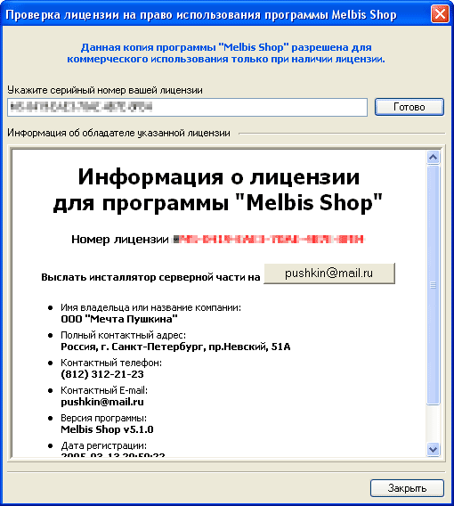

Установка серверной части
Для получения инсталляционного дистрибутива серверной части, а именно скриптов,
осуществляющих непосредственную работу интернет магазина, необходимо зайти в
раздел меню " Справка - Получение серверной части Melbis Shop".
После прохождения процесса активации лицензии появится кнопка отправки дистрибутива
на ваш E-mail адрес:

Нажмите на кнопку со своим E-mail адресом, и на него будет выслан
заархивированный дистрибутив инсталлятора. Рекомендуется хранить дистрибутив
инсталлятора у себя на компьютере в защищенном от постороннего доступа месте.
Для установки серверной части необходимо выполнить следующие действия:
- Разархивируйте дистрибутив и закачайте распакованные файлы из директории
scripts в директорию вашего сервера, где должен будет находиться
магазин;
- Установите, если это необходимо, права, разрешающие запись (как правило,
это 777) для:
- директории: /admin/tmp
- директории: /files
- директории: /templates
- файла: /admin/privat/privat.php
- Запустите программу Melbis Shop и укажите параметры
подключения к вашему магазину. По умолчанию пароль администратора - "admin"
(следует набирать с учетом регистра). Пароль администратора хранится в закодированном
виде в файле на сервере: /admin/privat/privat.php. Если случайно
произойдет утеря пароля, то необходимо заменить соответствующую строку в этом
файле на "define('SEC_PASSWORD', '21232f297a57a5a743894a0e4a801fc3');",
в этом случае пароль вновь примет значение "admin".
- Откройте окно "Установки
магазина на сервере", в котором укажите настройки подключения
к базе данных магазина (за этой информацией необходимо также обратиться к
системному администратору вашего сервера). Выполните инсталляцию таблиц магазина,
нажав на соответствующую кнопку.
- В том же окне "Установки
магазина на сервере", в разделе "Работа с шаблонами",
нажмите кнопку "Закачать на сервер" и выберите файл templates.zip,
поставляемый в дистрибутиве интернет-магазина.
- Откройте "Общие
настройки магазина" и заполните следующие поля: "Фактический
адрес интернет-магазина" и "E-mail администратора".
- В целях безопасности мы рекомендуем установить на файл /admin/privat/privat.php
права, разрешающие только его чтение (как правило, это 644).
Это файл содержит информацию, которую вы указываете в окне "Установки
магазина на сервере", поэтому если понадобится что-либо изменить
из этих данных, то установите на этот файл прежние права, которые разрешают
его модификацию.
- Выполните установку cron-скриптов (скриптов, которые сервер будет запускать
самостоятельно с заданной периодичностью). За информацией о том, как происходит
установка cron-скриптов, обратитесь к системному администратору. Необходимо
задать на выполнение следующие скрипты:
- /admin/cron/dayly.php - должен выполняться ежедневно
в момент минимальной посещаемости Вашего магазина. Как правило, это 01:00.
- /admin/cron/news_send.php - должен выполняться ежедневно
в момент минимальной посещаемости вашего магазина, но позже скрипта dayly.php
на 10-15 минут. Как правило, подходящее время 01:15.
- /admin/cron/reminder.php - должен выполняться с периодичностью
в рекомендуемом интервале каждые шесть часов. Данный скрипт производит
анализ запросов покупателей на отсутствующие товары и если они появились,
то отсылает им уведомления.
- Задайте свой (новый) пароль администратора
(Магазин - Сервер - Установки магазина на сервере).